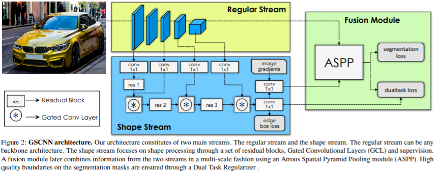
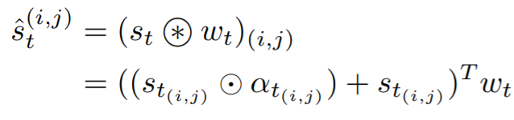
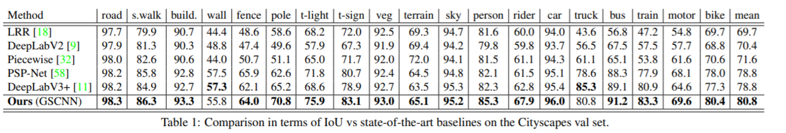
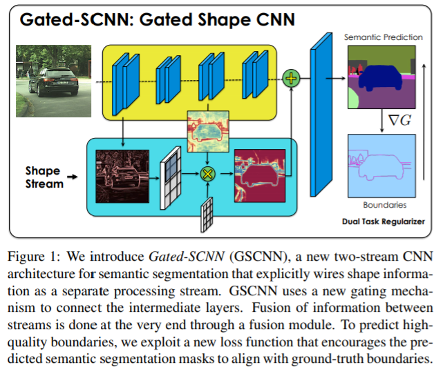

简述
这篇文章提出two-stream CNN架构，two-stream包括经典网络结构regular stream和处理边界信息的shape stream。这两个处理流并行处理不同的任务，相互协调工作。regular stream可以帮助shape stream只关注边界信息而不被一些无用的噪声干扰；shape stream可以辅助regular stream做更精确的识别。并且该架构在微小物体上有着明显提升。

细节描述
Shape Stream是如何工作的
作者在Shape Stream中添加了门控结构Gated Convolutional Layer，让Shape Stream将注意力放在它该处理的任务上即边界信息。
其中attention map 的公式为：
αt=σ(C1×1(st∥rt))
- rt与st分别对应regular and shape streams；
- ||表示的是st与rtconcatenating；
- 最后对1x1卷积添加sigmoid卷积。至此一个attention map就形成了。
GCL 的计算公式为:

表示的是：st逐像素与attention mapαt点乘，取得感兴趣区域信息。再通过加权值为wt的残差网络。
多任务学习损失函数：
- 预测边界信息使用的是BCE，用来监督更新both the regular and shape streams的参数；
- 预测语义信息使用的是CE，监督更新所有的网络参数。
Lθϕ,γ=λ1LBCEθ,ϕ(s,s^)+λ2LCEθϕ,γ(y^,f)
这里的λ1,λ2是用来控制两种损失权重的超参。
Dual Task Regularizer：
最后对two-stream的误差函数加入正则化项。
Lθϕ,γ=Lreg→θϕ,γ+Lreg←θϕ,γ
其中
Lreg→θϕ,γ=λ3∑p+∣∣∣ζ(p+)−ζ^(p+)∣∣∣
Lreg←θϕ,γ=λ4∑k,p1sp[y^pklogp(ypk∣r,s)]
ζ=21∥∥∇(G∗argmaxkp(yk∣r,s))∥∥
- ζ表示指定像素是否属于输入图像的某个语义信息，通过对分割输出求空间导数即可。
- P+表示的是真值与预测值都非零的像素坐标。
- λ3,λ4都是权重超参。
- 1s={1:s> thrs }，置信度阈值，论文中定为0.8。
成绩
在用 Cityscapes 基准测试中，这个模型的 mIoU 比 DeepLab-v3 高出 1.5%，F-boundary 得分比 DeepLab-v3 高 4%。在更小的目标上，该模型能够实现 7% 的 IoU 提升。

总结：
论文得来终觉浅，绝知此事要代码。等代码出来后再好好梳理一遍。

论文：Gated-SCNN: Gated Shape CNNs for Semantic Segmentation（2019.07）
地址：https://arxiv.org/abs/1907.05740
来自：英伟达